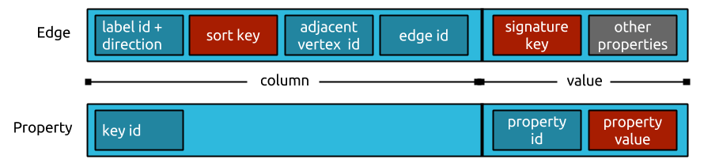

JanusGraph Data Model
JanusGraph stores graphs in adjacency list format which means that a graph is stored as a collection of vertices with their adjacency list. The adjacency list of a vertex contains all of the vertex’s incident edges (and properties).
By storing a graph in adjacency list format JanusGraph ensures that all of a vertex’s incident edges and properties are stored compactly in the storage backend which speeds up traversals. The downside is that each edge has to be stored twice - once for each end vertex of the edge.
In addition, JanusGraph maintains the adjacency list of each vertex in sort order with the order being defined by the sort key and sort order the edge labels. The sort order enables efficient retrievals of subsets of the adjacency list using vertex centric indices.
JanusGraph stores the adjacency list representation of a graph in any storage backend that supports the Bigtable data model.
Bigtable Data Model

Under the Bigtable data model each table is a collection of rows. Each row is uniquely identified by a key. Each row is comprised of an arbitrary (large, but limited) number of cells. A cell is composed of a column and value. A cell is uniquely identified by a column within a given row. Rows in the Bigtable model are called "wide rows" because they support a large number of cells and the columns of those cells don’t have to be defined up front as is required in relational databases.
JanusGraph has an additional requirement for the Bigtable data model: The cells must be sorted by their columns and a subset of the cells specified by a column range must be efficiently retrievable (e.g. by using index structures, skip lists, or binary search).
In addition, a particular Bigtable implementation may keep the rows sorted in the order of their key. JanusGraph can exploit such key-order to effectively partition the graph which provides better loading and traversal performance for very large graphs. However, this is not a requirement.
JanusGraph Data Layout

JanusGraph stores each adjacency list as a row in the underlying storage backend. The (64 bit) vertex id (which JanusGraph uniquely assigns to every vertex) is the key which points to the row containing the vertex’s adjacency list. Each edge and property is stored as an individual cell in the row which allows for efficient insertions and deletions. The maximum number of cells allowed per row in a particular storage backend is therefore also the maximum degree of a vertex that JanusGraph can support against this backend.
If the storage backend supports key-order, the adjacency lists will be ordered by vertex id, and JanusGraph can assign vertex ids such that the graph is effectively partitioned. Ids are assigned such that vertices which are frequently co-accessed have ids with small absolute difference.
Individual Edge Layout

Each edge and property is stored as one cell in the rows of its adjacent vertices. They are serialized such that the byte order of the column respects the sort key of the edge label. Variable id encoding schemes and compressed object serialization are used to keep the storage footprint of each edge/cell as small as possible.
Consider the storage layout of an individual edge as visualized in the top row of the graphic above. The dark blue boxes represent numbers that are encoded with a variable length encoding scheme to reduce the number of bytes they consume. Red boxes represent one or multiple property values (i.e. objects) that are serialized with compressed meta data referenced in the associated property key. Grey boxes represent uncompressed property values (i.e. serialized objects).
The serialized representation of an edge starts with the edge label’s unique id (as assigned by JanusGraph). This is typically a small number and compressed well with variable id encoding. The last bit of this id is offset to store whether this is an incoming or outgoing edge. Next, the property value comprising the sort key are stored. The sort key is defined with the edge label and hence the sort key objects meta data can be referenced to the edge label. After that, the id of the adjacent vertex is stored. JanusGraph does not store the actual vertex id but the difference to the id of the vertex that owns this adjacency list. It is likely that the difference is a smaller number than the absolute id and hence compresses better. The vertex id is followed by the id of this edge. Each edge is assigned a unique id by JanusGraph. This concludes the column value of the edge’s cell. The value of the edge’s cell contains the compressed serialization of the signature properties of the edge (as defined by the label’s signature key) and any other properties that have been added to the edge in uncompressed serialization.
The serialized representation of a property is simpler and only contains
the property’s key id in the column. The property id and the property
value are stored in the value. If the property key is defined as
list(), however, the property id is stored in the column as well.